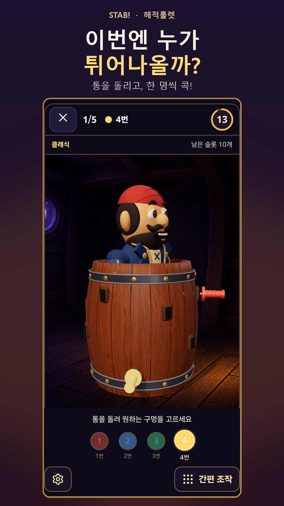
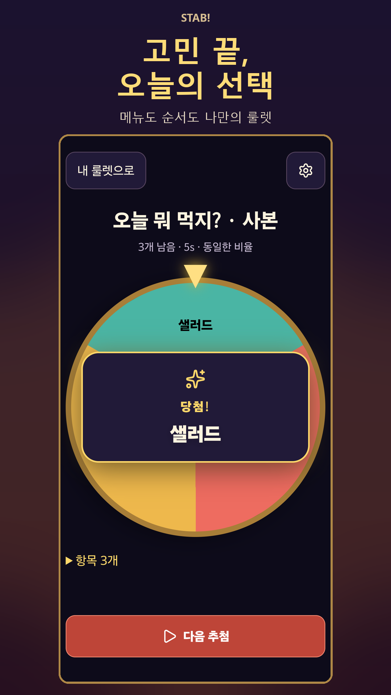
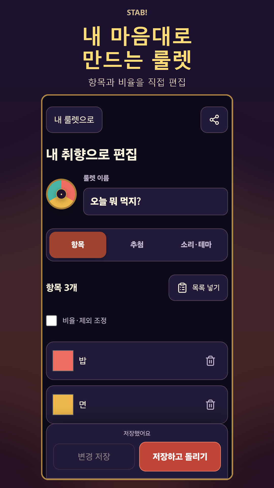

01 / 친구들과 모였을 때
이번 칼에 튀어나올까?
한 명씩 차례를 정하고 3D 통의 빈 구멍을 골라 칼을 꽂아 보세요. 해적이 튀어나오는 순간, 모두의 시선이 한곳으로 모입니다.
해적룰렛 → 인원 설정 → 번갈아 플레이
한 폰으로 함께 즐기는 파티 게임
STAB! / 해적룰렛 + 커스텀 룰렛
누가 먼저 할지, 오늘 뭘 먹을지.
통을 돌리고 칼을 콕, 내 선택지를 넣고 룰렛을 슝.
우리끼리의 작은 순간을 더 재미있게.
Android · 13세 이상 · 광고 포함


실제 앱 화면 · 한국어 화면 기준
PLAY / PICK / REPEAT
게임 한 판이 필요할 때도, 선택 하나가 어려울 때도.
01 / 친구들과 모였을 때
한 명씩 차례를 정하고 3D 통의 빈 구멍을 골라 칼을 꽂아 보세요. 해적이 튀어나오는 순간, 모두의 시선이 한곳으로 모입니다.
해적룰렛 → 인원 설정 → 번갈아 플레이
02 / 오늘 뭐 먹지?
김밥, 덮밥, 파스타처럼 실제로 먹고 싶은 메뉴를 넣어 돌려 보세요. 자주 쓰는 조합은 저장해 두고 다음 고민에 다시 꺼낼 수 있어요.
커스텀 룰렛 → 메뉴 입력 → 돌리기
03 / 누가 먼저 하지?
발표 순서나 간식 담당을 정할 때 선택지를 직접 적으세요. 당첨 항목 제외를 켜면 이미 뽑힌 항목을 빼고 다음 차례를 고를 수 있어요.
항목 입력 → 당첨 항목 제외 → 차례대로 선택
IN THE APP
아래 화면은 실제 Android 기기에서 촬영했습니다.

MAKE IT YOURS
나만의 룰렛을 저장하고 즐겨찾기로 모아 두세요. 항목별 비율과 회전 시간을 조정하거나, 결과 카드를 공유할 수 있습니다.
해적룰렛은 한 휴대폰을 함께 보며 번갈아 즐기는 로컬 모임 게임입니다. 원격으로 접속하는 온라인 멀티플레이 게임은 아닙니다.
네. 커스텀 룰렛에 원하는 항목을 직접 넣을 수 있습니다. 각 항목의 비율을 조정하고, 당첨된 항목을 다음 회전에서 제외하도록 설정할 수도 있습니다.
배경음악과 효과음의 음량을 조절하고 진동을 끌 수 있습니다. 화면 효과를 줄이거나 통을 돌리지 않고 구멍을 고르는 간편 조작도 지원합니다.
광고가 포함된 Android 앱이며 13세 이상을 대상으로 합니다. 광고 및 데이터 처리에 관한 내용은 아래 개인정보처리방침에서 확인하세요.
사진 없이도 게임을 시작할 수 있습니다. 선택해 넣은 얼굴 사진은 앱 전용 저장소에 보관되며, 앱이 서버로 업로드하지 않습니다.
아래 문의 이메일로 앱 이름, 기기 모델, Android 버전, 앱 버전과 문제 상황을 보내 주세요. 사진이나 이름 등 개인 정보는 문의 화면에서 가려 주세요.
READY WHEN YOU ARE
지금 설치해 두면 선택이 필요한 순간 바로 꺼낼 수 있어요.
Google Play에서 설치Android · 13세 이상 · 광고 포함